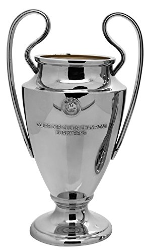
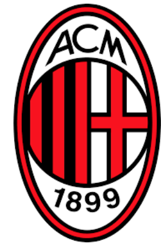
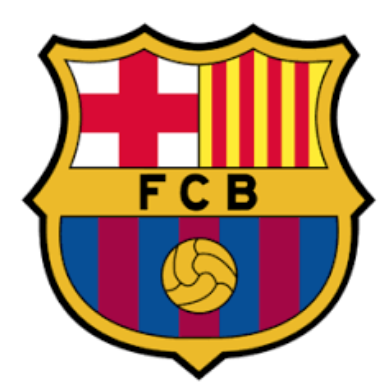
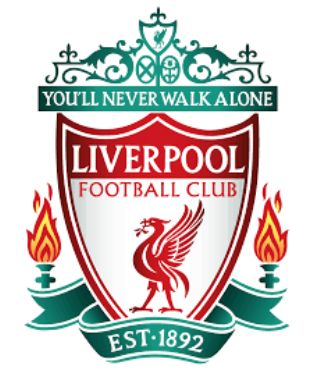
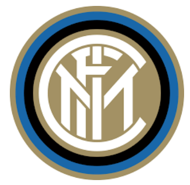
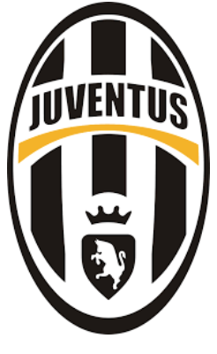
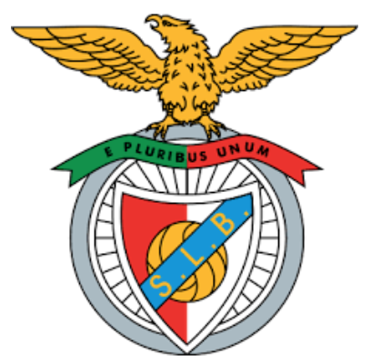
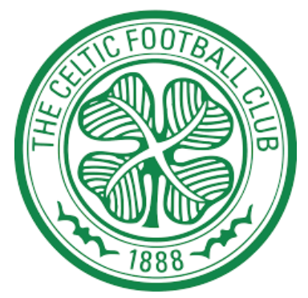
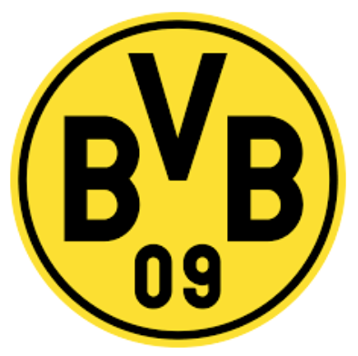

CAMPEONES CHAMPIONS LEAGUE
CAMPEONES CHAMPIONS LEAGUE 
| Equipo de Futbool | Origen | Fundacion | Copas Champions League | Ver Mas... | |
|---|---|---|---|---|---|
| Real Madrid FC | España | 6 de Marzo de 1902 |  | Ver Mas... | |
|  | AC Milan | Italia | 16 de Diciembre de 1899 | Ver Mas... | |
|  | Barcelona FC | España | 29 de noviembre de 1899 | Ver Mas... | |
| Bayern Munchen | Alemania | 27 de Febrero de 1900 | Ver Mas... | ||
|  | Liverpool Football Club | Reino Unido | 3 de Junio de 1892 | Ver Mas... | |
| Amsterdamsche Football Club Ajax | Paises Bajos | 18 de Marzo de 1900 | Ver Mas... | ||
|  | FC Internazionale Milano | Italia | 9 de Marzo de 1908 | Ver Mas... | |
| FC Manchester United | Reino Unido | 1878 | Ver Mas... | ||
|  | FC Juventus de Turín | Italia | 1 de Noviembre de 1897 | Ver Mas... | |
|  | Sport Lisboa e Benfica | Portugal | 28 de Febrero de 1904 | Ver Mas... | |
| Nottingham Forest FC | Reino Unido | 1 de Enero de 1865 | Ver Mas... | ||
 |
Fútbol Club Oporto | Portugal | 28 de Septiembre de 1893 | Ver Mas... | |
|  | Celtic Football Club | Escocia | 6 de Noviembre de 1887 | Ver Mas... | |
| Chelsea FC | Reino Unido | 10 de Marzo de 1905 | Ver Mas... | ||
|  | Borussia Dortmund FC | Alemania | 19 de Diciembre de 1909 | Ver Mas... |